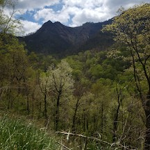

About Michael
When I was in high school, I attended an in depth Graphic Design class for two years. Afterwards, I had a Certification of Graphic Design. I then went and graduated from the College for Creative Studies. After my graduation with a Bachelor of Fine Arts, I fell into a career being a commercial and residential painter. After fifteen years in the trades, I had to make a change.
The one career that seemed to make the most sense for me and my family was in web development. I have always had a passion for art and design, but over the years found myself intrigued by problem solving. There’s a humungous sense of accomplishment whenever I figured out a solution. I feel that software engineering and development is the combination of all of these elements.
In my personal life, I enjoy as much time as possible with my family. My family and I love to go on hikes and vacation in a tent in the middle of the woods. With the right career, we may just live out of an RV as we travel the country side.
